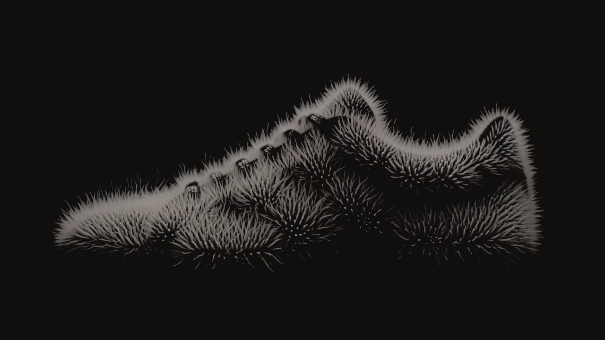

As you scroll, nine days pass in the growing chamber. The mold is seeded with living culture, points of light in the dark. On day 3 each seed sends out threads; on day 5 the colonies meet and the pair takes its shape; on day 7 the threads stand up into a down. On day 9, instead of pressing it into leather, we stop the growth and keep the pair as it grew.
Drop 004
Mycelium One,
as it grew.
Mycelium is usually pressed into leather. We dry ours standing, on day 9: the growth stops, the down stays.

DownThreads up to 6 mm, dried to hold.
EyeletsGrown around pins. Hemp laces.
SolePressed dense, underfoot only.
Pink Oyster, day 6 of 9 in the chamber
- Price
- €165
- Ships
- Day 9, at 09:00
- Pairs in the chamber
- 312 of 500
No two pairs
grow alike.
Each pair carries the mark grown from its number, and the spore print its strain left in the chamber.
Bury it.
Ninety days to soil.
Bury it, or send it back: we compost it and take €40 off your next pair.
Reserve a pair